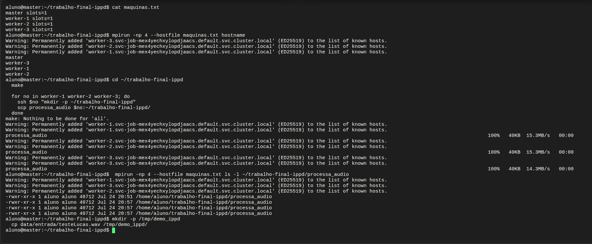
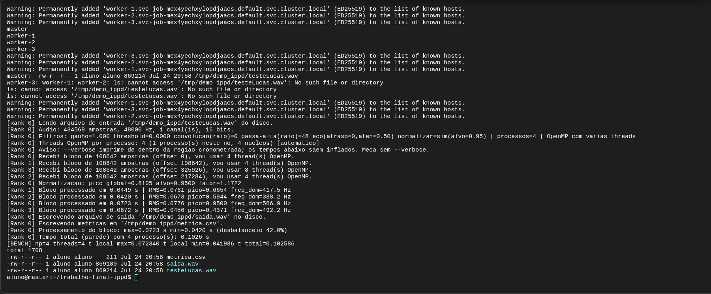
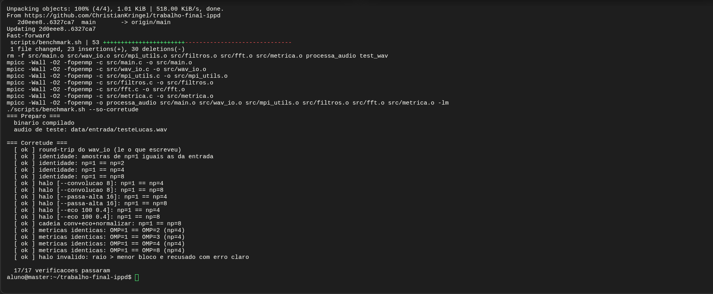
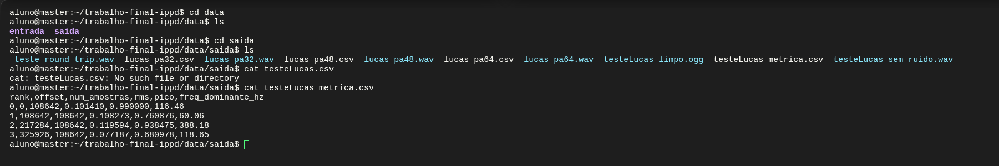

Christian Rodrigo Miritz Kringel
Lucas Aniceto
Rodrigo Santos
Prof. Gerson Geraldo Homrich Cavalheiro
https://github.com/ChristianKringel/trabalho-final-ippd
Implementamos em C um programa que lê um arquivo de áudio WAV, distribui as amostras entre vários processos MPI, aplica filtros digitais e calcula métricas do sinal em paralelo com OpenMP, e no fim remonta o áudio processado em um único arquivo de saída. O trabalho roda em quatro máquinas do Xivoco que não compartilham disco, e a solução para esse problema é a decisão central do projeto: apenas o processo de rank 0 tem contato com arquivos.
O tema foi liberado pelo enunciado, com a condição de que o problema escolhido manipulasse um arquivo, justamente porque a máquina virtual MPI não compartilha disco entre os nós e esse obstáculo precisava ser contornado. Escolhemos processamento de áudio porque ele atende a essa condição de forma natural e ainda combina bem com os dois níveis de paralelismo pedidos: o arquivo de entrada é grande e indivisível do ponto de vista do disco, então a leitura precisa ser centralizada e o conteúdo distribuído por mensagem; as amostras são independentes entre si em vários filtros, o que dá uma decomposição limpa por blocos para o MPI; dentro de cada bloco o laço sobre as amostras é trivialmente paralelizável, o que dá trabalho para o OpenMP; e alguns filtros dependem de amostras vizinhas, o que obriga a troca de bordas entre processos e torna o problema mais interessante do que uma simples divisão em partes iguais.
Além dos filtros, o programa calcula três métricas por bloco: energia RMS, pico de amplitude e frequência dominante. A frequência dominante exige uma transformada de Fourier, que implementamos à mão para não depender de biblioteca externa.
À primeira vista, processar áudio em paralelo parece simples: basta dividir o vetor de amostras em partes iguais e mandar cada parte para um processo. O complicador é que as máquinas não compartilham sistema de arquivos. Se cada processo tentasse abrir o arquivo de entrada por conta própria, a maioria deles simplesmente não o encontraria, porque o arquivo existe apenas em uma das máquinas.
Por causa disso, decidimos que apenas o processo de rank 0 tem contato com o disco. Ele é o único que lê o arquivo de entrada e o único que escreve o arquivo de áudio de saída e o arquivo de métricas. Todos os outros processos nunca abrem arquivo nenhum: recebem as amostras que precisam processar diretamente do rank 0, por mensagens MPI, e devolvem o resultado da mesma forma. Essa decisão aparece em todo o código e é, na prática, o que torna a solução compatível com o ambiente de execução. A seção 7 mostra essa propriedade sendo verificada no terminal do Xivoco.
O rank 0 lê o arquivo inteiro e converte as amostras de inteiros de 16 bits para
ponto flutuante no intervalo de menos um a mais um, que é um formato mais
confortável para filtros e para a transformada de Fourier. Em seguida calcula como
dividir o total de amostras entre os processos. Como o número de amostras quase
nunca é múltiplo exato do número de processos, não dá para dividir em partes iguais,
então usamos MPI_Scatterv e MPI_Gatherv, que aceitam
blocos de tamanhos diferentes. O resto da divisão é distribuído de um em um entre os
primeiros processos, de modo que a diferença de tamanho entre qualquer par de blocos
seja no máximo de uma amostra.
Depois do Scatterv, cada processo trabalha apenas na sua parte, sem precisar conhecer o restante do áudio. Isso é possível porque os filtros ponto a ponto, como o ganho e o gate por limiar, calculam cada amostra de saída a partir apenas da amostra de entrada correspondente. Terminado o processamento, o rank 0 recolhe os blocos com Gatherv, remontando o áudio na ordem correta, e escreve a saída.
Implementamos também filtros em que cada amostra de saída depende das vizinhas:
uma média móvel, que funciona como passa-baixa, um passa-alta derivado dela, e um
eco. Nas bordas de cada bloco, parte dessas vizinhas está no bloco do processo ao
lado. Para resolver isso, antes de aplicar o filtro cada processo troca com os
vizinhos uma margem de amostras, o halo, usando MPI_Sendrecv. Com essa
margem no lugar, o resultado nas fronteiras entre blocos fica igual ao que sairia se
o áudio tivesse sido processado inteiro de uma vez. Nas duas pontas do áudio, onde
não há vizinho, a margem é preenchida com zeros. No caso do eco, que só depende de
amostras anteriores, a troca é feita apenas para o lado esquerdo.
Esse é o ponto do projeto em que um erro não apareceria como travamento, e sim como um resultado sutilmente errado nas juntas entre blocos. Por isso a bateria de testes descrita na seção 8 compara a saída de execuções com números diferentes de processos e exige igualdade byte a byte.
A normalização é o filtro mais interessante do ponto de vista de paralelismo,
porque precisa de uma informação que nenhum processo tem sozinho: o maior pico do
áudio inteiro, que está espalhado entre os blocos. Cada processo calcula o pico do
seu bloco e, com MPI_Allreduce usando a operação de máximo, todos
passam a conhecer o mesmo pico global e aplicam exatamente o mesmo fator de escala.
Como a normalização roda depois dos outros filtros, ela leva em conta o efeito
deles.
Dentro de cada bloco, o laço que percorre as amostras é paralelizado com OpenMP, de forma que várias threads dividem o trabalho do bloco entre si. Assim existem dois níveis de paralelismo simultâneos: o MPI separando o áudio em blocos entre processos, e o OpenMP dividindo cada bloco entre threads.
O número de threads não precisa ser configurado à mão. Se
OMP_NUM_THREADS não estiver definido, cada processo abre um número de
threads igual aos núcleos da máquina dividido pelos processos que estão no mesmo
nó, e não no mundo. Isso existe porque o padrão do OpenMP é abrir uma thread por
núcleo em cada processo, o que com quatro processos em 28 núcleos daria 112 threads
disputando 28 núcleos. Contar apenas os processos do próprio nó também evita que uma
execução distribuída fique subutilizada.
Optamos por implementar a transformada rápida de Fourier nós mesmos, pelo algoritmo de Cooley-Tukey na forma iterativa, em vez de usar biblioteca pronta. A escolha foi tanto para não depender de nada que pudesse não estar instalado no ambiente de execução quanto porque escrever a transformada à mão deixa mais claro o que está acontecendo. Antes de calcular o espectro aplicamos uma janela de Hann sobre o trecho, o que reduz o vazamento espectral e deixa a leitura da frequência dominante mais precisa. A FFT tem três caminhos de código conforme o número de threads disponíveis, e a bateria de testes verifica que os três concordam.
O código completo está no repositório indicado no cabeçalho, distribuído em seis
arquivos em src/. Reproduzimos aqui os quatro trechos que concentram as
decisões de paralelismo.
A distribuição dos blocos, em src/main.c. O
Bcast leva o formato do áudio para todos, e o Scatterv
leva os blocos, que têm tamanhos diferentes descritos em counts e
displs:
// Passo 2: todos ficam sabendo o formato/tamanho do audio
MPI_Bcast(&info, sizeof(WavInfo), MPI_BYTE, 0, MPI_COMM_WORLD);
int total_valores = (int)(info.num_amostras * info.num_canais);
// Cada processo calcula a mesma particao de forma deterministica
[...]
// Passo 3: distribuicao dos blocos
MPI_Scatterv(audio_total, counts, displs, MPI_FLOAT,
bloco_local, meu_tamanho, MPI_FLOAT,
0, MPI_COMM_WORLD);
A troca de halo, em src/mpi_utils.c. Os dois
Sendrecv resolvem as duas bordas, e o uso de
MPI_PROC_NULL nas pontas do áudio evita qualquer caso especial no
código:
void trocar_halo(const float *bloco, int n, int raio, int rank, int n_procs,
float *estendido) {
// Zera primeiro: as extremidades globais ja ficam com halo de zeros
memset(estendido, 0, (n + 2 * raio) * sizeof(float));
memcpy(estendido + raio, bloco, n * sizeof(float));
// Nas pontas, MPI_PROC_NULL faz o Sendrecv virar operacao nula e o halo
// daquele lado continua zerado
int esquerda = (rank == 0) ? MPI_PROC_NULL : rank - 1;
int direita = (rank == n_procs - 1) ? MPI_PROC_NULL : rank + 1;
MPI_Status status;
// Envia as primeiras 'raio' amostras para a esquerda e recebe da direita o
// meu halo direito
MPI_Sendrecv(estendido + raio, raio, MPI_FLOAT, esquerda, 0,
estendido + raio + n, raio, MPI_FLOAT, direita, 0,
MPI_COMM_WORLD, &status);
// Envia as ultimas 'raio' amostras para a direita e recebe da esquerda o
// meu halo esquerdo
MPI_Sendrecv(estendido + n, raio, MPI_FLOAT, direita, 1,
estendido, raio, MPI_FLOAT, esquerda, 1,
MPI_COMM_WORLD, &status);
}
O paralelismo OpenMP dentro do bloco, em src/filtros.c. Cada
thread calcula a sua faixa de amostras, e a função de log existe para que a divisão
apareça no terminal quando o programa roda com --verbose:
void aplicar_convolucao_media(const float *estendido, float *saida, int n,
int raio, int rank) {
int comprimento = 2 * raio + 1;
#pragma omp parallel
{
int inicio, fim;
faixa_da_thread(n, &inicio, &fim);
// saida[i] usa estendido[i .. i + 2*raio]; o centro da janela e
// estendido[i + raio], que corresponde a amostra i do bloco
for (int i = inicio; i < fim; i++) {
double soma = 0.0;
for (int k = 0; k < comprimento; k++) {
soma += estendido[i + k];
}
[...]
}
}
}
A redução em dois níveis, também em src/filtros.c. O pico do
bloco sai de uma redução OpenMP entre as threads, e o pico global sai de um
MPI_Allreduce entre os processos. É o ponto em que os dois modelos de
paralelismo se encaixam um dentro do outro:
float pico_local_bloco(const float *bloco, int n) {
float pico = 0.0f;
// reduction(max:pico) da a cada thread uma copia privada e combina no fim,
// sem condicao de corrida. Pico LOCAL; o global sai do Allreduce no main.
#pragma omp parallel for schedule(static) reduction(max:pico)
for (int i = 0; i < n; i++) {
float a = fabsf(bloco[i]);
if (a > pico) {
pico = a;
}
}
return pico;
}
| Flag | O que faz | Usa halo | Comunicação MPI extra |
|---|---|---|---|
--ganho G | multiplica a amplitude por G | não | nenhuma |
--threshold L | zera amostras com módulo abaixo de L | não | nenhuma |
--convolucao R | média móvel de raio R (passa-baixa) | sim | Sendrecv nos dois lados |
--passa-alta R | original menos a média móvel de raio R | sim | Sendrecv nos dois lados |
--eco ATRASO ATEN | soma uma cópia atrasada e atenuada | só à esquerda | Sendrecv à esquerda |
--normalizar ALVO | escala o áudio até o pico global virar ALVO | não | Allreduce de máximo |
--no-parallel | força o OpenMP a uma única thread | - | nenhuma |
--verbose | liga os logs por rank e por thread | - | nenhuma |
A ordem de aplicação é fixa no código e independe da ordem na linha de comando: ganho, threshold, convolução, passa-alta, eco e por último a normalização. A forma geral de rodar é:
mpirun -np <N> ./processa_audio <entrada.wav> <saida.wav> [metrica.csv] [flags]
O programa lê apenas WAV PCM de 16 bits, e recusa qualquer outro formato com uma
mensagem clara. O número de canais e a taxa de amostragem são livres e vêm do
cabeçalho. Áudio em MP3, OGG ou WAV de 24 ou 32 bits precisa ser convertido antes, o
que fazemos com ffmpeg -i entrada.ogg -c:a pcm_s16le saida.wav.
Duas flags do mpirun importam para medir. Por padrão o Open MPI
amarra cada processo a um núcleo, o que prende todas as threads daquele rank no
mesmo núcleo e faz o OpenMP parecer inútil, então qualquer execução em que o tempo
importe usa --bind-to none. E o --verbose do nosso
programa imprime de dentro da região cronometrada, o que infla os tempos, então ele
serve para demonstrar a divisão do trabalho e não para medir. O programa avisa isso
quando a flag é usada.
O acesso ao Xivoco é feito pela página web da plataforma, que abre um terminal já
dentro do ambiente. Ao subir o job, a plataforma entrega quatro máquinas e o
terminal começa logado na master com o usuário aluno. O
projeto fica em /home/aluno/trabalho-final-ippd. Não é preciso carregar
módulo nem ativar ambiente: o mpicc e o mpirun já estão
disponíveis, então make na raiz compila direto. As máquinas se alcançam
por SSH pelo nome curto e sem senha.
| Máquina | Núcleos | Papel na execução |
|---|---|---|
master | 4 | onde o terminal abre, onde o projeto está clonado e onde o rank 0 roda |
worker-1 | 4 | só processa blocos, nunca abre arquivo |
worker-2 | 4 | idem |
worker-3 | 8 | idem |
Vale registrar que as máquinas não são iguais entre si: a worker-3
tem oito núcleos e as outras três têm quatro. Isso não exigiu ajuste nenhum na linha
de comando, porque a repartição automática de threads descrita na seção 3.4 lê o
número de núcleos da máquina em que cada processo caiu, e não um valor fixo
combinado antes. O efeito aparece direto no log de execução, em que o rank 3 abre
oito threads enquanto os outros três abrem quatro.
Para rodar em mais de uma máquina, o mpirun precisa de um arquivo
listando os nós. Mantemos dois, porque as duas coisas que fazemos no Xivoco pedem
repartições diferentes.
$ cat maquinas.txt $ cat maquinas_bench.txt master slots=1 master slots=4 worker-1 slots=1 worker-1 slots=4 worker-2 slots=1 worker-2 slots=4 worker-3 slots=1 worker-3 slots=4
Com uma vaga por máquina e quatro processos, o MPI é obrigado a colocar um
processo em cada nó, que é exatamente o que a demonstração da seção 7 precisa
mostrar. Se as vagas fossem quatro por máquina, os quatro processos caberiam todos
na master e a execução, apesar de correta, não provaria nada sobre
vários nós. A master vem primeiro na lista de propósito, porque o rank
0 vai para o primeiro host e o rank 0 é o único processo que lê e escreve arquivo. O
segundo arquivo, com dezesseis vagas no total, é o usado pela varredura de
desempenho, que chega a oito processos.
A primeira consequência prática de não haver disco compartilhado aparece antes de
qualquer coisa relacionada ao áudio: o mpirun não copia o executável
para as outras máquinas. Se o processa_audio existir apenas na
master, os três workers não têm o que executar. Depois de compilar, é
preciso mandar o binário para os outros nós, no mesmo caminho, porque o
mpirun usa o diretório de trabalho atual também nos nós remotos.
make for no in worker-1 worker-2 worker-3; do ssh $no "mkdir -p ~/trabalho-final-ippd" scp processa_audio $no:~/trabalho-final-ippd/ done mpirun -np 4 --hostfile maquinas.txt ls -l ~/trabalho-final-ippd/processa_audio

hostname, a cópia do binário por scp e a
confirmação de que o executável chegou aos quatro nós.Esta é a verificação que mostra, no próprio terminal, o problema que o trabalho
contorna. A ideia é colocar o áudio de entrada em /tmp, que é disco
local de cada máquina, e criar o arquivo apenas na master:
mkdir -p /tmp/demo_ippd cp data/entrada/testeLucas.wav /tmp/demo_ippd/
Feito isso, perguntamos às quatro máquinas se elas enxergam esse arquivo. O
comando roda um hostname e um ls dentro de cada processo,
então cada máquina responde por si:
$ mpirun -np 4 --hostfile maquinas.txt sh -c 'echo "$(hostname): $(ls -l /tmp/demo_ippd/testeLucas.wav 2>&1)"' master: -rw-r--r-- 1 aluno aluno 869214 Jul 24 20:58 /tmp/demo_ippd/testeLucas.wav worker-1: ls: cannot access '/tmp/demo_ippd/testeLucas.wav': No such file or directory worker-2: ls: cannot access '/tmp/demo_ippd/testeLucas.wav': No such file or directory worker-3: ls: cannot access '/tmp/demo_ippd/testeLucas.wav': No such file or directory
Três das quatro máquinas não têm o arquivo. E, mesmo assim, o processamento roda nas quatro:
$ mpirun -np 4 --hostfile maquinas.txt --bind-to none ./processa_audio \
/tmp/demo_ippd/testeLucas.wav /tmp/demo_ippd/saida.wav /tmp/demo_ippd/metrica.csv \
--passa-alta 48 --normalizar 0.95 --verbose
[Rank 0] Lendo arquivo de entrada '/tmp/demo_ippd/testeLucas.wav' do disco.
[Rank 0] Audio: 434568 amostras, 48000 Hz, 1 canal(is), 16 bits.
[Rank 0] Threads OpenMP por processo: 4 (1 processo(s) neste no, 4 nucleos) [automatico]
[Rank 0] Recebi bloco de 108642 amostras (offset 0), vou usar 4 thread(s) OpenMP.
[Rank 1] Recebi bloco de 108642 amostras (offset 108642), vou usar 4 thread(s) OpenMP.
[Rank 3] Recebi bloco de 108642 amostras (offset 325926), vou usar 8 thread(s) OpenMP.
[Rank 2] Recebi bloco de 108642 amostras (offset 217284), vou usar 4 thread(s) OpenMP.
[Rank 0] Normalizacao: pico global=0.8105 alvo=0.9500 fator=1.1722
[Rank 1] Bloco processado em 0.0449 s | RMS=0.0761 pico=0.6654 freq_dom=417.5 Hz
[Rank 2] Bloco processado em 0.0420 s | RMS=0.0673 pico=0.5944 freq_dom=388.2 Hz
[Rank 0] Bloco processado em 0.0723 s | RMS=0.0776 pico=0.9500 freq_dom=566.9 Hz
[Rank 3] Bloco processado em 0.0672 s | RMS=0.0456 pico=0.4371 freq_dom=492.2 Hz
[Rank 0] Escrevendo arquivo de saida '/tmp/demo_ippd/saida.wav' no disco.
[Rank 0] Escrevendo metricas em '/tmp/demo_ippd/metrica.csv'.
[Rank 0] Processamento do bloco: max=0.0723 s min=0.0420 s (desbalanceio 42.0%)
[Rank 0] Tempo total (parede) com 4 processo(s): 0.1026 s

Esse log resume o funcionamento do programa. As 434568 amostras foram divididas
em quatro blocos iguais de 108642, cada um com o seu deslocamento; a normalização
encontrou o pico global de 0,8105 por redução coletiva e aplicou o mesmo fator de
1,1722 em todos os processos; e no fim apenas o rank 0 escreveu os arquivos, que
apareceram somente na master.
O desbalanceio de 42% entre o bloco mais lento e o mais rápido tem uma explicação direta neste ambiente: os blocos têm o mesmo tamanho, mas as máquinas que os processam não têm a mesma capacidade, como mostra a tabela da seção 6.
A corretude está automatizada em make check, que roda a bateria de
scripts/benchmark.sh. São dezessete verificações, e a ideia por trás da
maioria delas é sempre a mesma: o resultado não pode depender de como o trabalho
foi dividido. Processamos o mesmo áudio com números diferentes de processos e
exigimos que a saída seja byte a byte idêntica.
| Grupo de verificações | Qtd. | O que garante |
|---|---|---|
| Round-trip do leitor e escritor de WAV | 1 | o programa lê corretamente o que escreveu, sem MPI |
| Identidade sem filtros contra a entrada | 1 | Scatterv e Gatherv não corrompem nem reordenam amostras |
| Identidade com 2, 4 e 8 processos | 3 | a divisão em blocos desiguais está correta |
| Halo de convolução, passa-alta e eco | 6 | a troca de bordas está correta; sem ela as juntas entre blocos diferem |
| Cadeia convolução + eco + normalização | 1 | a redução global do pico é consistente entre processos |
| Métricas com 1, 2, 3, 4 e 8 threads | 4 | os três caminhos de código da FFT concordam |
| Raio maior que o menor bloco | 1 | o caso inválido é recusado com erro claro, não em silêncio |

master do
Xivoco. As dezessete verificações passaram.Duas conferências numéricas complementam a bateria automatizada, e ambas
conferem. O filtro de ganho escala a energia na proporção exata: sobre o áudio
curto, o RMS de cada bloco cai de 0,5683 para 0,2842 com --ganho 0.5,
uma razão de 0,5000 em todos os quatro blocos. E a frequência dominante calculada
pela nossa transformada dá 441,43 Hz para um seno gerado em 440 Hz, o que fica
dentro de um bin da FFT naquele tamanho de bloco.
A tabela de referência não é escrita à mão: é gerada por make bench
e fica em docs/resultados.md, junto com o ambiente em que foi medida. A
varredura abaixo é da nossa máquina de desenvolvimento, com 28 núcleos, sobre um
áudio de 30 segundos com --passa-alta 48, mediana de cinco repetições.
Escolhemos apresentar essa varredura como estudo de escalabilidade porque ela tem
núcleos suficientes para separar o efeito dos processos do efeito das threads sem
disputa por CPU, o que as máquinas de quatro núcleos do Xivoco não permitem.
| Processos | Threads | t_local (s) | t_total (s) | Speedup |
|---|---|---|---|---|
| 1 | 1 | 0,1258 | 0,1303 | 1,00x |
| 1 | 2 | 0,1002 | 0,1039 | 1,25x |
| 1 | 4 | 0,0572 | 0,0611 | 2,13x |
| 1 | 8 | 0,0415 | 0,0464 | 2,81x |
| 2 | 1 | 0,0721 | 0,0774 | 1,68x |
| 2 | 4 | 0,0445 | 0,0498 | 2,62x |
| 2 | 8 | 0,0252 | 0,0305 | 4,28x |
| 4 | 1 | 0,0286 | 0,0341 | 3,83x |
| 4 | 4 | 0,0217 | 0,0265 | 4,91x |
| 8 | 1 | 0,0165 | 0,0200 | 6,52x |
| 8 | 2 | 0,0198 | 0,0244 | 5,35x |
t_local é o processamento do bloco, tomado como o máximo entre os
processos; t_total é a região paralela inteira, incluindo Scatterv e
Gatherv. A referência sequencial explícita, com um processo e o OpenMP desligado
pelo próprio programa, ficou em 0,109 s. A tabela completa, incluindo as
configurações em que processos vezes threads passa dos 28 núcleos e por isso há
disputa por CPU, está em docs/resultados.md, e os dados crus com mínimo
e máximo de cada configuração em docs/resultados.csv.
Os dois níveis de paralelismo ajudam, e o MPI ajuda mais que o OpenMP: sozinho, o
OpenMP tira 2,81 vezes com oito threads em um processo, enquanto oito processos de
uma thread tiram 6,52 vezes. Isso é coerente com a estrutura do programa, em que
parte do custo por rank está fora dos laços paralelizados. Em
filtrar_com_vizinhanca, cada chamada faz duas alocações, a cópia do
halo e um memcpy de volta, tudo proporcional ao tamanho do bloco e tudo
serial dentro do processo. O MPI reduz esse tamanho dividindo o áudio; o OpenMP não.
É uma leitura sustentada pelas medições, e não algo confirmado com profiler.
O escalonamento também não é linear, e não deveria ser: parte do tempo é gasta espalhando e recolhendo os blocos, e essa parte não diminui quando se adicionam processos. Ela cresce, o que aparece com clareza no ambiente distribuído.
A execução multi-nó no Xivoco expôs um número que nenhuma medição em máquina única mostra. Com oito processos e uma thread cada, atravessando duas máquinas, o processamento do bloco levou 0,027 s mas a região paralela inteira levou 0,300 s. A diferença entre esses dois números é essencialmente o Scatterv e o Gatherv passando pela rede em vez da memória compartilhada. Na máquina local, na mesma configuração, essa diferença é de milésimos de segundo.
Esse é o custo real da decisão de centralizar o disco no rank 0: todo o conteúdo do arquivo trafega pela rede duas vezes, uma na ida e uma na volta. Para o tamanho de áudio deste trabalho o custo é aceitável, mas ele mostra que a estratégia tem um limite, e a seção 11 comenta o que seria feito adiante.
Vale registrar duas coisas que encontramos pelo caminho, porque ambas fazem o paralelismo parecer inútil sem que haja nada de errado com o código.
A primeira é a amarração de CPU do mpirun. Com o padrão
--bind-to core, todas as threads de um rank ficam presas em um núcleo
só e o tempo trava em torno de 0,14 s independentemente de quantas threads se peça;
com --bind-to none ele cai de 0,20 s para 0,06 s na mesma varredura.
Sem essa flag, uma varredura de threads mede afinidade de CPU e não o código.
A segunda é a oversubscrição de threads, que aparecia quando cada processo
abria uma thread por núcleo: quatro processos em 28 núcleos davam 112 threads, e as
barreiras da FFT tropeçavam no escalonador a ponto de o tempo piorar ao
adicionar processos. Isso motivou duas mudanças no código: o programa passou a
repartir os núcleos entre os processos do mesmo nó quando
OMP_NUM_THREADS não está definido, e a FFT passou a abrir uma única
região paralela em vez de uma por etapa. Com isso o tempo voltou a cair de forma
monótona e não é mais preciso ajustar OMP_NUM_THREADS à mão.
Para não ficar apenas em áudio sintético, aplicamos o programa a uma mensagem de voz real de nove segundos, gravada em celular e recebida por aplicativo de mensagens. O caminho completo tem três etapas e é a demonstração que consideramos mais interessante do trabalho, porque parte de um áudio de verdade, com ruído de verdade, e chega a um resultado audível.
Primeiro, converter para o formato que o programa lê. A mensagem veio em
OGG com codec Opus, que o nosso leitor não aceita, então passou pelo
ffmpeg e virou um WAV PCM de 16 bits, mono, 48000 Hz, com 434568
amostras.
Segundo, descobrir onde está o ruído. Medindo o espectro das janelas mais silenciosas do arquivo, o piso de ruído tem RMS de 0,0078, ou seja -42,2 dBFS, e 78% da sua energia está abaixo de 300 Hz, enquanto a voz concentra 59% da energia entre 300 Hz e 1 kHz. O ruído deste áudio é ronco de baixa frequência, não chiado, o que aponta diretamente para o filtro passa-alta. Uma pista disso apareceu de graça no próprio programa: rodando sem filtro nenhum, um dos blocos acusou frequência dominante de 60,06 Hz, que é a cara de um zumbido de rede elétrica.

Terceiro, aplicar o passa-alta e normalizar. Comparando as janelas mais silenciosas e as mais altas do arquivo, sempre nas mesmas posições em todas as versões, medimos:
| Versão | SNR | Piso de ruído | Ruído abaixo de 300 Hz |
|---|---|---|---|
| original | 29,1 dB | -42,2 dBFS | 78,4% |
--threshold 0.01 | 30,9 dB | -41,3 dBFS | 54,2% |
--passa-alta 32 | 33,5 dB | -50,1 dBFS | 3,5% |
--passa-alta 48 | 35,0 dB | -48,7 dBFS | 9,5% |
--passa-alta 64 | 35,3 dB | -46,8 dBFS | 17,7% |
O raio 48 é o melhor equilíbrio. Ele atenua 32 dB em 60 Hz e 24 dB em 100 Hz, mas custa apenas 6 dB em 300 Hz, então derruba o ronco sem afinar a voz. O raio 32 limpa mais os graves, porém já tira 12 dB em 300 Hz e 4,4 dB em 500 Hz, onde está o corpo da fala. Depois do filtro, a frequência dominante do bloco que antes acusava 60 Hz passou a acusar 417,5 Hz, ou seja, o zumbido saiu e o que sobrou foi a voz.
A tentativa que deu errado, e por quê. A primeira coisa que tentamos neste
áudio foi --threshold 0.01 seguido de normalização, que é o filtro que
o próprio nome sugere para remover ruído, e o resultado ficou audivelmente pior que
o original. O motivo é instrutivo: o threshold é um gate por amostra, que zera
qualquer amostra com módulo abaixo do limiar sem olhar o contexto. Como o piso de
ruído deste arquivo é 0,0078, praticamente em cima do limiar de 0,01, o gate não
cortou o ruído nas pausas: ele cortou dentro da própria forma de onda da fala,
zerando 30,4% de todas as amostras, incluindo todo cruzamento por zero no meio da
voz alta. Isso não remove ruído, adiciona distorção harmônica. E vale notar que o
SNR medido até subiu um pouco, o que mostra que essa métrica sozinha não captura
distorção. O arquivo ruim está guardado no repositório justamente como
contraexemplo.
A varredura de desempenho multi-nó ainda não produziu números válidos.
Rodando a bateria com o arquivo de hosts de quatro vagas por máquina, o Open MPI
preenche a master antes de usar os workers, então com quatro processos
os quatro caem na mesma máquina de quatro núcleos e a varredura de threads passa a
medir disputa por CPU em vez de escalabilidade. A correção é passar
--map-by node nas execuções do benchmark.sh, para espalhar
os ranks em vez de empilhá-los, e trocar a marcação de oversubscrição, que hoje
compara processos vezes threads com os núcleos da máquina onde o script roda em vez
dos núcleos por nó. É por isso que a tabela da seção 9 é da máquina de
desenvolvimento e não do Xivoco.
Uma das dezessete verificações falha em execução distribuída. A
verificação de que um raio maior que o menor bloco é recusado com erro claro passa
quando tudo roda em uma máquina, mas falha quando os processos estão espalhados. O
programa recusa o caso corretamente, o que se confirma pelo código de saída; o que a
verificação não consegue é ler a mensagem de erro, aparentemente porque o
MPI_Abort encerra o job antes que o texto vindo de outro nó chegue ao
terminal. Ou seja, é uma limitação do teste e não do programa, mas precisa ser
corrigida para que a bateria distribuída feche em dezessete de dezessete.
O rank 0 é um gargalo por construção. Centralizar o disco resolve o problema do sistema de arquivos, mas faz todo o conteúdo do arquivo trafegar pela rede duas vezes, como mostra a seção 9.2. Para áudios muito maiores o caminho natural seria processar em janelas, sobrepondo a leitura de um trecho com o processamento do anterior, em vez de carregar o arquivo inteiro na memória do rank 0 antes de começar.
A média móvel é um filtro cru. Ela tem stopband pobre, então parte do ronco sobrevive em qualquer raio. Um filtro FIR projetado com uma janela adequada daria muito mais atenuação para o mesmo custo por amostra, e a estrutura de halo já implementada serviria sem mudança nenhuma.
# 1. clonar e compilar (nada alem de mpicc com OpenMP e libm) git clone https://github.com/ChristianKringel/trabalho-final-ippd cd trabalho-final-ippd make # 2. bateria de corretude (dezessete verificacoes) make check # 3. execucao em uma maquina mpirun -np 4 --bind-to none ./processa_audio \ data/entrada/testeLucas.wav data/saida/limpo.wav data/saida/metrica.csv \ --passa-alta 48 --normalizar 0.95 # 4. execucao distribuida nos quatro nos do Xivoco printf 'master slots=1\nworker-1 slots=1\nworker-2 slots=1\nworker-3 slots=1\n' > maquinas.txt for no in worker-1 worker-2 worker-3; do ssh $no "mkdir -p ~/trabalho-final-ippd"; scp processa_audio $no:~/trabalho-final-ippd/ done mpirun -np 4 --hostfile maquinas.txt --bind-to none ./processa_audio \ /tmp/demo_ippd/testeLucas.wav /tmp/demo_ippd/saida.wav /tmp/demo_ippd/metrica.csv \ --passa-alta 48 --normalizar 0.95 --verbose
| Caminho no repositório | Conteúdo |
|---|---|
src/main.c | fluxo principal, Scatterv e Gatherv, halo, repartição de threads |
src/wav_io.c | leitura e escrita de WAV PCM de 16 bits, escrita à mão |
src/filtros.c | os filtros, com os laços paralelizados por OpenMP |
src/fft.c | FFT de Cooley-Tukey iterativa e janela de Hann |
src/metrica.c | RMS, pico e frequência dominante por bloco |
scripts/benchmark.sh | bateria de corretude e varredura de desempenho |
docs/resultados.md, docs/resultados.csv | tabelas de tempo geradas por make bench |
prints/ | capturas de tela das execuções no Xivoco |
README.md | documentação completa do projeto |
O trabalho cumpre o que o enunciado pedia: um problema que manipula arquivo, resolvido com MPI e OpenMP em conjunto, rodando na plataforma Xivoco em quatro máquinas que não compartilham disco. A restrição do disco não ficou como detalhe de configuração; ela virou a decisão de arquitetura que organiza o programa inteiro, e está verificada no terminal, com três das quatro máquinas respondendo que o arquivo de entrada não existe enquanto o processamento roda normalmente nas quatro.
Os dois níveis de paralelismo se justificam por medição, e não por suposição. O MPI responde pela maior parte do ganho, chegando a 6,5 vezes com oito processos, porque reduzir o tamanho do bloco reduz também o custo serial que existe dentro de cada rank. O OpenMP contribui com 2,8 vezes quando age sozinho, e os dois combinados funcionam desde que o número de threads acompanhe os núcleos disponíveis, o que o programa passou a fazer automaticamente depois que a oversubscrição apareceu nas medições.
O que consideramos mais valioso de ter aprendido não são os números de speedup, e
sim os dois casos em que a medição contrariou a intuição: a amarração de CPU do
mpirun, que escondia completamente o efeito do OpenMP, e o filtro de
threshold, que tem o nome certo para remover ruído e piorou o áudio de forma
audível. Nos dois casos foi a medição que corrigiu o palpite, e é por isso que tanto
a bateria de corretude quanto a varredura de tempos são scripts versionados no
repositório em vez de números anotados à mão.